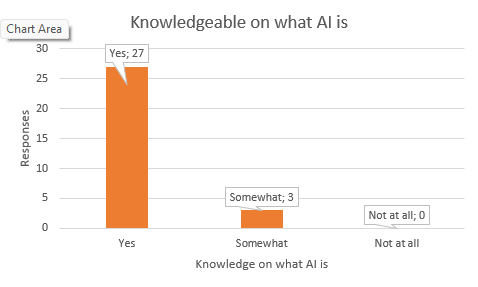
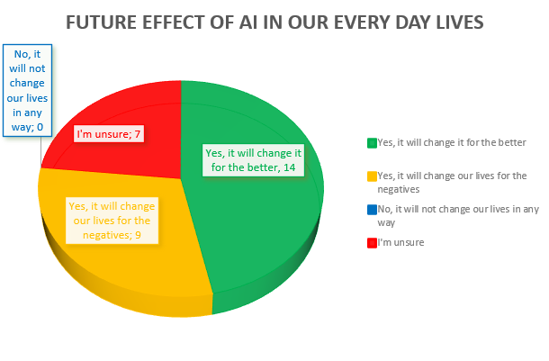
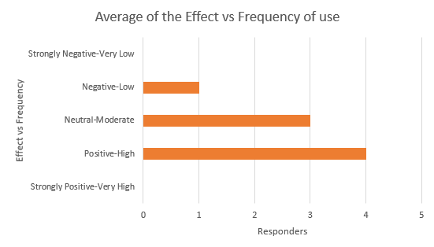
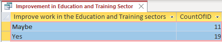
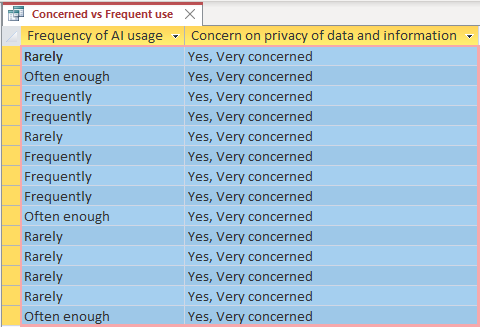

The findings were conducted through a PAT which further divided the findings between the means of
Documents, a Questionnaire, Spreadsheets and Databases.
PAT
The Practical Assessment Task(PAT) is a practical long-term project completed within the school year. This
task is designed to assess the student's ability to apply skills and knowledge learnt in line with Computer
Applications and Technology. The purpose of this PAT is to test the ability to gather and process information
and create documents, questionnaire, spreadsheets and databases.
Documents
Through the use of Microsoft Word a word document was made containing information from various sources.
This information was on AI in our lives and on the role of AI in the education and training sectors and is the
information used to answer all the questions on the Home Page.
QuestionnaireGoogle Forms was used to create a questionnaire in order to be distributed to some individuals to gather
their personal knowledge and experience with AI as well as their thoughts on how it could effect the education and
and training environment both positively and/or negatively.
Spreadsheets
Spreadsheets were created through the use of Microsoft Excel and the data gathered from the questionnaire
in order to summarize the information into the form of tables and graphs.
Databases
Information from the Excel spreadsheets were taken in order to form tables, queries and forms into the form of database.
This was done through the use of the Microsoft Access program.
Findings and Analysis

As seen in the graph, most people are knowledgeable as to what AI is. 27 in 30 people say that they are knowledgeable
on what AI is.

Most people think AI will change our lives for the better. Through benefits such as personalization, being
accessible, equality and no over-dependence, it's clear and valid to say that AI could really benefit us for the better.
Though roughly 3/4's of this amount said that they think it will change for the negatives, this can also be true as AI
does have over-dependence, skill degradation, data privacy and more risks and disadvantages.

From the questionnaire, when further analyzed we see that more people who say that AI will have a more
positive effect on the education and training sectors have a higher usage rate of AI within the education and
training sectors. From this we also see the opposite where those who think AI will have a negative effect have
a lower usage rate.

From our query, we asked the question 'Do you think AI can improve work and learning in the Education and Training
sectors?'. Answers to this question all came back positive with none of the respondents saying no and many agreeing
that they think AI can improve work and learning.

In the table to the left, we see that as much as people are concerned about the privacy of their data and information
they still use AI, most people say rarely, but others say frequently. Although they have these high concerns, they still
use AI and this shows just how greatly AI is integrating into our lives.
Conclusion
People are knowledgeable on AI, especially those who are still within the education and/or training sectors, as well
as those who are young and see AI as a positive that could benefit us in the future. Additionally people do have their
concerns for the risk of their information but they still use it either way.
Through all information, findings and analysis, we can observe that most people have a more positive view on
AI. Some do still have a negative view on it, but still use it but at a lower usage rate than those who have
have a positive view on AI. We can see that learners in particular use AI quite a bit and others out of school
rarely use it.
AI has become something we all use at some point, not all the time, maybe all the time but it all
depends on you and how exposed you are to it and your view on it.